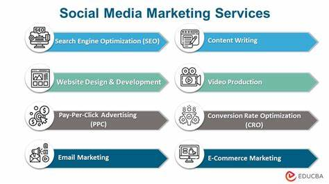

Social Media Marketing
1. For a General Social Media Marketing Service:
Unlock the full potential of your brand with our expert social media marketing services. We craft tailored strategies to amplify your online presence, engage with your target audience, and drive meaningful results. From creating compelling content and managing your social media profiles to analyzing performance metrics and optimizing campaigns, our team ensures your brand stands out in the digital landscape. Let us transform your social media channels into powerful assets that not only attract attention but also convert followers into loyal customers.Elevate your brand's voice with our exceptional content creation and management services. Our team of creative professionals crafts engaging and relevant content tailored to your brand's identity and audience preferences.
2. For a Focused Social Media Advertising Campaign:
Maximize your reach and ROI with our specialized social media advertising campaigns. We design and execute targeted ads that connect with your ideal audience, boost brand visibility, and drive conversions. By leveraging advanced targeting techniques and data-driven insights, we ensure your ads deliver the right message to the right people at the right time. Whether you're looking to increase website traffic, generate leads, or promote a new product, our team will craft a campaign that meets your goals and exceeds your expectations.From eye-catching graphics and videos to compelling copy and interactive posts, we ensure your social media feeds are fresh, vibrant, and aligned with your marketing goals. Let us handle the content while you focus on building meaningful connections with your audience.
3. For Social Media Analytics and Optimization:
Transform data into actionable insights with our comprehensive social media analytics and optimization services. We delve into your social media performance metrics to uncover trends, measure engagement, and assess the effectiveness of your strategies. By identifying strengths and areas for improvement, we provide actionable recommendations that enhance your social media presence and drive better results. Stay ahead of the competition with data-driven decisions that refine your approach and optimize your online impact.Leverage the power of influencer marketing to elevate your brand's reach and credibility. We connect you with influential personalities who resonate with your target audience, creating authentic partnerships that amplify your message.